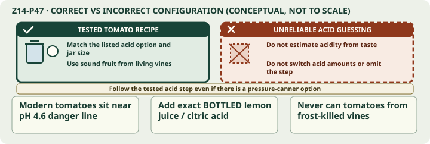

Z14-P47 · Food production and preservation · New manuscript
Acidify home-canned tomatoes using the exact tested recipe
Eliminate silent pH-drift botulism risk in modern tomato varieties by adding standardized acid to EVERY jar.
When it applies · Home canning of whole, crushed, juiced, stewed, or sauced tomatoes and tested tomato salsas.
Equipment · Commercially standardized bottled lemon juice (5% acidity) OR food-grade citric acid (or 5% vinegar where recipe specifies), exact measuring spoon, and USDA tomato recipe.

Actions
- For whole, crushed or juiced tomatoes, use a tested recipe and its prescribed acid and jar size. NCHFP lists specific bottled lemon juice, citric acid and 5% vinegar options for its applicable procedures. They are not interchangeable by volume.[P08, P22]
- Keep the recipe’s acid step even if it offers a pressure-canning option. Do not generalize these directions to salsa, mixed products or another jar size.[P22, P06]
- Use sound fruit and reject fruit from dead or frost-killed vines for canning. Follow all preparation and processing conditions in the same tested recipe.[P22]
Failure recognition · Canning garden heirloom tomatoes picked off frost-killed October vines with fresh-squeezed lemon juice and zero measured bottled acid.[P08]
Verify · Confirm the fruit, jar size, acid and complete processing schedule match one tested recipe.[P22]
Stop or change course · If the tomato source, acid option or processing schedule fails the tested conditions, do not can that batch.[P22]
Evidence and editorial notes
- P06 · USDA / NCHFP · USDA Complete Guide to Home Canning (2015 / current NCHFP edition)
- Section: Complete Guide to Home Canning > Principle of Tested Protocols · Conditions: All residential home canning (boiling-water and pressure canning)
Support: Treat every USDA/NCHFP tested canning recipe as a single indivisible system: food pH, piece size, liquid viscosity, jar size, headspace, processing method, pressure/temperature, time, and altitude adjustment must all match the tested protocol.
Limitations: Adding extra starch, flour, oil, fats, or altering acid/low-acid ratios slows heat penetration and can cause lethal botulism. · Conflicting evidence: Directly prohibits online untested shortcuts and heirloom recipe alterations.
Editorial note: Foundational system-integrity rule across all Z14 canning cards. · Specialist reviewer: Food preservation process authority and Extension
Primary source · checked 2026-11-24 - P08 · NCHFP · Using Boiling Water Canners (current web edition)
- Section: Using Boiling Water Canners · Conditions: Tested high-acid or acidified recipe with a validated water-bath process
Support: Use the tested recipe’s equipment and full time including altitude adjustment. Keep required water cover and a continuous boil.
Limitations: Atmospheric steam has a separate validated scope; tomato acidification is P22. · Conflicting evidence: See A02 claim audit for boundaries.
Editorial note: Separates high-acid vs low-acid canning gates cleanly. · Specialist reviewer: Food preservation and Extension specialist
Primary source · checked 2026-11-24 - P22 · USDA / NCHFP · Canning Tomatoes Introduction (USDA 2015 revision)
- Section: Quality; Caution; Acidification; pressure alternative · Conditions: NCHFP whole, crushed or juiced tomato procedures, recipe and jar size specified
Support: Use the complete tested recipe and its acidification choices. Approved pressure alternatives still include acidification. Reject tomatoes from dead or frost-killed vines.
Limitations: Does not transfer to salsa, mixed products or untested recipe substitutions. · Conflicting evidence: See A02 claim audit for boundaries.
Editorial note: Added in A02 to separate a consequential source boundary. · Specialist reviewer: Extension food preservation
Primary source · checked 2026-11-25
Source lineage · NCHFP Boiling Water and Pressure Canning; new manuscript · Classification · New manuscript.